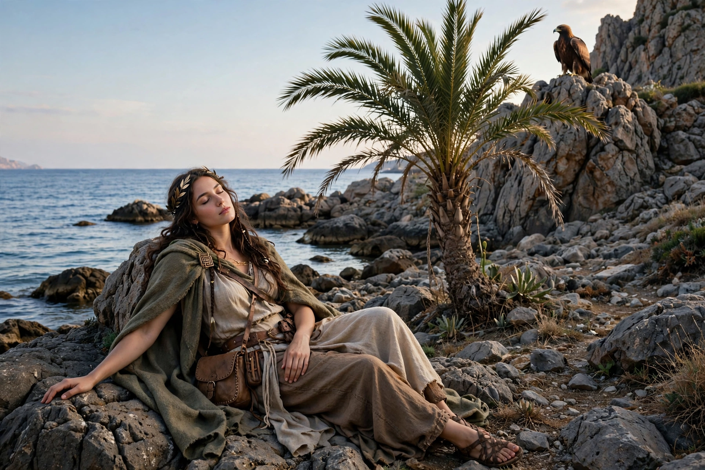

From Wikipedia, the free encyclopedia
| Leto | |
|---|---|
| Affiliation | Greek mythology; Titaness, mother of Apollo and Artemis |
| Parents | Coeus and Phoebe (Titans) |
| Children | Apollo and Artemis, by Zeus |
| Sacred island | Delos, where she was finally allowed to give birth |

Leto is the Titaness of Greek mythology remembered almost entirely as a mother — of the twins Apollo and Artemis by Zeus — yet her single story is among the most moving in the corpus: the gentle goddess, "always mild, kind to gods and men" in Hesiod's phrase, driven over the whole earth in labour because Hera, in jealousy, had forbidden every land under the sun to receive her. No island or mainland dared offer rest until Delos — poor, rocky, barren Delos, which had nothing to lose — accepted her, won over (in the Homeric Hymn's telling) by the promise that her son would make the island rich with his temple and pilgrims.
On Delos, clasping the sacred palm tree, Leto gave birth — Artemis first, who in one tradition immediately served as midwife for her brother Apollo, born in a blaze of light that made the whole island bloom with gold. The myth explains Delos's sanctity (it became Apollo's great sanctuary and the treasury-island of Athens's league) and encodes an older truth: Leto's name and her Lycian cult connections suggest a goddess imported from Anatolia, where she had temples in her own right — in Lycia she was a mother-goddess of standing before Greece reduced her to a genealogy. Her other appearances are maternal defences: her children slaughter the Niobids for Niobe's insult to her, and Apollo and Artemis kill the giant Tityos who assaulted her.
Greek mythology · Apollo · Artemis · Hera · Zeus